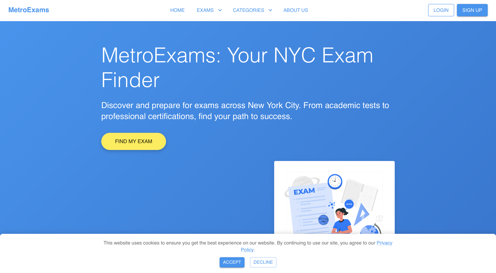

Projects
MediGuid NYC: AI Symptom Checker & Health Resources
MediGuid NYC is a full-stack web application providing **AI-powered symptom guidance** and **local health resources** for New Yorkers. Built with a React.js frontend (Material-UI) and a Node.js/Express.js backend, it acts as an intelligent assistant for non-emergency health inquiries and finding local medical support.
This project demonstrates strong **full-stack development** and **external AI API integration** (OpenRouter.ai). Key achievements include successful **environment variable management** and intricate **CORS policy configurations** across deployed services. I effectively resolved complex deployment challenges, including `ERR_CONNECTION_REFUSED` (from `localhost` issues), `Network Error` on the frontend, and "Out of Memory" errors on the backend.
Deployed on **Vercel** (frontend hosting) and **Render** (backend deployment), MediGuid NYC showcases robust **client-server architecture** and the ability to build and deploy scalable **AI-driven web applications**.
View ProjectCogniFlow: AI-Powered Data Transformation & Processing Platform
CogniFlow, a full-stack web application designed for **AI-powered data transformation**, **data processing**, and **file management**. This platform serves as a versatile **AI tool** for businesses and individuals needing efficient **data extraction**, **document parsing**, and **report generation**. The intuitive and responsive user interface, built with React.js for the frontend, leverages Material-UI (MUI) to ensure a modern and adaptable user experience across all devices, facilitating seamless text input, file uploads, and task configuration.
This project showcases strong expertise in **full-stack development**, integrating a robust **Node.js/Express.js backend** to handle API requests, perform complex data processing, and manage file operations securely. It demonstrates proficiency in **external API integration** for advanced AI capabilities, supporting a modular architecture for future growth. Key achievements include implementing secure **environment variable management** for API keys and backend URLs on both client and server sides, configuring **CORS policies** for seamless cross-origin communication between deployed frontend (Vercel hosting) and backend (Render cloud platform) services, and successfully resolving complex deployment and communication challenges (e.g., `404 Not Found` errors due to URL construction, `500 Internal Server Errors` during backend processing, and `localhost` download link issues).
The application highlights core skills in **component-driven design**, **state management**, handling secure file uploads and downloads, and building intuitive **multi-step task interfaces**. It reflects a comprehensive understanding of **client-server architecture** and the ability to deploy complex **web applications** to leading cloud platforms like **Vercel** (for **frontend hosting**) and **Render** (for **backend deployment**), ensuring high availability, scalability, and secure operation for **AI workflow automation**.
View ProjectOdysseus AI Mentor: Personalized Growth & Development Platform
Odysseus AI Mentor, a full-stack web application that serves as a personalized AI mentor for users seeking guidance in self-improvement and career development. The application features a dynamic and responsive chat interface built with **React.js** for the frontend, leveraging **Material-UI (MUI)** to ensure a modern and adaptable user experience across all devices.
This project showcases strong expertise in **full-stack development**, integrating a robust **Node.js/Express.js backend** to handle API requests and securely manage sensitive information. It demonstrates proficiency in **external API integration** with the **OpenRouter API** for advanced AI capabilities (using models like Mistral-7B-Instruct). Key achievements include implementing secure **environment variable management** for API keys on the server-side, configuring **CORS policies** for seamless cross-origin communication between deployed frontend (Vercel) and backend (Render) services, and resolving complex deployment challenges (e.g., `EADDRINUSE` errors, `401 Unauthorized` API key issues).
The application highlights skills in **component-driven design**, **state management**, and building intuitive conversational interfaces. It reflects a comprehensive understanding of client-server architecture and the ability to deploy complex applications to cloud platforms like **Vercel (for frontend)** and **Render (for backend)**, ensuring high availability and secure operation.
View ProjectCareerQuest: Personalized Career Discovery
Developed **CareerQuest**, a dynamic and intuitive web platform designed to guide users in discovering their ideal career path. The application is built with **React.js** for a robust and efficient front-end, utilizing **Material-UI** for a modern, responsive, and visually appealing user interface. Key features include a comprehensive questionnaire to assess interests and skills, personalized career recommendations, an interactive chat widget for support, user authentication (Google and email/password), and a clear "About Us" section.
This project demonstrates strong proficiency in building scalable single-page applications, implementing smooth and engaging animations with **Framer Motion** for enhanced user experience (e.g., skill selection), and mastering **Material-UI** for complex and adaptive layouts across different devices. It showcases a deep understanding of component-driven design, state management, client-side routing with **React Router Dom**, and attention to detail in creating intuitive user interfaces for personal and career decision-making.
View ProjectBankInsight: Financial Comparison Platform
Developed **BankInsight**, a dynamic and intuitive web platform designed to help users compare and explore various banking products and services. The application is built with **React.js** for a robust and efficient front-end, utilizing **Material-UI** for a modern, responsive, and visually appealing user interface. Key features include comprehensive bank listings with powerful search and filtering capabilities, detailed comparison cards for various financial products, a responsive navigation system, an interactive "How It Works" guide, and a dynamic FAQ section.
This project demonstrates strong proficiency in building scalable single-page applications, implementing smooth and engaging animations with **Framer Motion** for enhanced user experience across key sections like the hero, "how it works," and FAQ, and mastering **Material-UI** for complex and adaptive layouts across different devices. It showcases a deep understanding of component-driven design, state management, client-side routing with **React Router Dom**, and attention to detail in creating intuitive user interfaces for financial decision-making.
View ProjectMetroExams: NYC Exam Finder
Developed **MetroExams**, a dynamic and interactive web platform designed to help users find and explore various exams across New York City. The application is built with **React.js** for a robust and efficient front-end, utilizing **Material-UI** for a modern, responsive, and visually appealing user interface. Key features include a comprehensive exam listing page with search and filtering capabilities, detailed exam information cards, a responsive navigation system, and an interactive FAQ section.
This project demonstrates strong proficiency in building scalable single-page applications, implementing smooth and engaging animations with **Framer Motion** for enhanced user experience, and mastering **Material-UI** for complex and adaptive layouts across different devices. It showcases a deep understanding of component-driven design, state management, client-side routing with **React Router Dom**, and attention to detail in creating intuitive user interfaces.
View ProjectDynamic Medical Practice Web Platform
Developed a modern and highly interactive web platform for a medical clinic, leveraging **React.js** for a robust front-end and **Material-UI** for a polished, responsive user interface. Key sections include an inviting hero banner, a detailed breakdown of services, a 'Meet the Doctors' gallery, a curated feed for medical news, and an integrated newsletter subscription.
This project underscores strong proficiency in building scalable single-page applications, implementing sophisticated **Framer Motion** animations for enhanced user engagement on scroll, and mastering Material-UI for complex and adaptive layouts. It showcases a commitment to component-driven design and intuitive user experiences.
View ProjectZeroCrate: Fresh Grocery Retail Solutions
A comprehensive React.js website with Material-UI, showcasing ZeroCrate's AI-powered solutions for fresh grocery retailers (forecasting, waste reduction). Integrates Chart.js for data visualization.
Features seamless navigation via React Router, a detailed blog, "How It Works" guide, and demo request form. Highlights strong front-end development for a B2B SaaS digital presence.
View ProjectIndex: AI-Powered Data Platform
A dynamic and interactive React.js web application, developed with Material-UI, showcasing an AI-powered data platform. It features sophisticated data visualization dashboards using Recharts, allowing users to query, analyze, and understand complex datasets, complemented by an integrated SQL editor.
The project integrates seamless navigation with React Router and delivers an engaging user experience through modern scroll-triggered animations powered by Framer Motion. It includes key sections like a responsive Hero, detailed feature overviews, and dedicated authentication pages (login/signup), highlighting strong front-end development for a B2B SaaS solution.
View ProjectAtheniq AI: Personalized Marketing Platform

A sophisticated React.js web application with Material-UI showcasing AI-driven marketing solutions. Features a dynamic Hero Section, campaign creation, case studies, and a resource hub.
Incorporates smooth, scroll-triggered reveal animations via `react-intersection-observer`, custom forms, carousels, and video embeds for an engaging UI/UX.
View ProjectAurora: Your Personalized Productivity Dashboard
Aurora is a comprehensive React.js application designed as a personalized productivity dashboard. It integrates various widgets and task management features to help users stay organized and focused.
Key features include a dynamic to-do list, integrated weather and focus timer widgets, quick notes, daily quotes, and goal tracking. The application boasts a responsive design and intuitive user interface built with Material-UI, demonstrating strong front-end development skills in state management, component architecture, and UI/UX best practices for an enhanced user experience.
View ProjectCollege Advisor for NYC High School Students
A modern React.js web application built with Material-UI, designed to help NYC high school students find suitable colleges based on their academic and personal preferences.
Features a dynamic questionnaire with multi-select options, a sophisticated matching algorithm to recommend colleges, and a responsive design for optimal viewing on all devices. Demonstrates strong front-end development, state management, and external library integration.
View ProjectJobFinder AI
A modern job board web application built with React.js, designed to help users find suitable job opportunities. It features robust filtering options by job title, location, and type, and includes an interactive AI assistant for enhanced job search capabilities.
Demonstrates strong front-end development, state management, API integration, and user-friendly design.
View ProjectDocFinder: Online Doctor Appointment Platform
A user-friendly and responsive React.js web application, built with Material-UI, designed to streamline the process of finding and booking healthcare appointments. It allows users to search for doctors by specialty, location (e.g., Manhattan, New York), and accepted insurance plans.
The platform features intuitive search filters, a dynamic list of doctors with details like experience, ratings, and availability, and interactive elements such as a modal for selecting insurance carriers. Navigation is seamless using React Router, and the application prioritizes an engaging user experience, demonstrating robust front-end development for a practical healthcare solution.
View ProjectAurora: Your Personalized Productivity Dashboard
Aurora is a comprehensive React.js application designed as a personalized productivity dashboard. It integrates various widgets and task management features to help users stay organized and focused.
Key features include a dynamic to-do list, integrated weather and focus timer widgets, quick notes, daily quotes, and goal tracking. The application boasts a responsive design and intuitive user interface built with Material-UI, demonstrating strong front-end development skills in state management, component architecture, and UI/UX best practices for an enhanced user experience.
View ProjectMyLinkShortener: Smart Links, Powerful Analytics
MyLinkShortener is a modern React.js application for creating and managing short, branded links. It offers intuitive tools for tracking digital connections and boosting brand presence.
Key features include instant URL shortening, custom link branding, and comprehensive analytics on clicks, geography, and referrals. Built with Material-UI, it showcases strong front-end skills in state management, API integration, and responsive design for an effective link management solution.
View ProjectInsurify Pro
A React.js web application for managing insurance information and quotes. Successfully navigated complex Git version control issues and established a robust Vercel continuous deployment pipeline.
Demonstrates strong debugging and problem-solving abilities in development and deployment phases.
View ProjectFreshMetrics Sales Dashboard: Predictive Analytics
A dynamic React.js dashboard using Material-UI for predictive sales analytics and order planning. Features interactive charts, data filtering by product/category/date, and a sortable sales data table.
This project demonstrates strong front-end development, data visualization with Recharts, state management, and responsive design for business intelligence.
View ProjectAtheniq AI: Personalized Marketing Platform
A sophisticated React.js web application with Material-UI showcasing AI-driven marketing solutions. Features a dynamic Hero Section, campaign creation, case studies, and a resource hub.
Incorporates smooth, scroll-triggered reveal animations via `react-intersection-observer`, custom forms, carousels, and video embeds for an engaging UI/UX.
View ProjectSwiftPay Landing Page
A responsive React.js landing page for a modern financial service. Features responsive navigation with dropdowns/hamburger menu, and interactive hover effects on feature cards.
Utilizes Material-UI for consistent design and pure CSS animations for smooth transitions, demonstrating strong front-end development for engaging web experiences.
View ProjectAxiom Dashboard: Cloud Communication Admin

An interactive React.js single-page application for managing cloud communication services. Features dynamic layout, sidebar navigation, search filters, and add/edit/delete operations with modal forms.
Includes a global notification system for user feedback. Demonstrates React's component-based architecture, state management, and responsive CSS for an administrative portal.
View ProjectAI Agent Management Dashboard
A dynamic **React.js** application designed for monitoring and managing AI agents. It leverages the **React Context API** for efficient global state management, integrates **React Hook Form** for robust and validated interactive configurations, and presents key performance metrics with **Chart.js** for data visualization.
Features include real-time simulated updates for agent status and output logs, intuitive filtering, and seamless navigation via **React Router**. The project showcases strong front-end development practices, including comprehensive **error handling**, clear **loading states**, **responsive design**, enhanced **accessibility (A11y)**, and **unit testing** with Jest and React Testing Library.
View ProjectCRM System: Lead Management Solution

A robust React.js application with Material-UI for comprehensive sales lead management. Features include adding/editing leads, a dynamic sales pipeline, communication logs, and task management.
Includes a dashboard, advanced filtering/sorting, and data persistence using Local Storage. Demonstrates modular architecture and user-friendly design for sales administration.
View ProjectHR Management System: Employee & Payroll Solution

A modern React.js application with Material-UI for streamlining HR operations. Key features include employee management, efficient payroll processing, and a comprehensive onboarding module.
The system offers dynamic data display (sorting, pagination, search) and seamless module navigation via React Router, showcasing professional, functional HR administration.
View ProjectProject Management App: Team Collaboration
A robust multi-page React.js application with Material-UI for enhancing team collaboration. Features include task management, file sharing, real-time chat, and dynamic reporting with Recharts.
Seamless navigation via React Router and a component-based architecture demonstrate a professional, functional digital workspace for efficient project execution.
View ProjectVoyageNow: Ride-Sharing Experience
A modern ride-sharing application built with HTML, CSS, and JavaScript. Leverages the Google Maps API for interactive maps and route visualization, with real-time fare estimates and transparent pricing.
Provides a clean, user-friendly interface for effortless booking and handling diverse routes.
View ProjectEmployee Tracking System
Developed with HTML, CSS, and JavaScript, this system provides a straightforward solution for managing personnel data. It allows users to efficiently add, view, and organize employee records.
Features a clear and intuitive interface for data entry and display, streamlining administrative tasks.
View ProjectJobFinder AI

An HTML, CSS, and JavaScript-based platform for job discovery. Allows users to search for jobs by keywords/location using the JSearch API.
Features a modern UI, job saving, and a simulated AI chat assistant for suggestions.
View ProjectNYC Benefits Resources

Your central hub for finding support programs in New York City. Explore resources for Food Assistance, Housing, Healthcare, and more.
Stay informed about key announcements like ERAP and Summer EBT programs.
View ProjectDaily Hacks

Explore daily hacks across Tech, General, Productivity, and Home categories. Discover tips for iPhone features, Pomodoro Technique, clean microwaves, and posture.
Allows saving favorite tips for later access.
View ProjectInnovate & Elevate Careers - Job Application Form
A user-friendly online job application form designed for clear navigation, real-time validation, and responsiveness across devices.
Features interactive elements, accessibility enhancements, and a modern design inspired by Material UI principles.
View ProjectJoinUp
JoinUp brings various groups together on one platform for seamless communication. Offers intuitive tools for group chats and inviting members without sharing personal numbers.
Features polls, GIFs, event scheduling, and more in a user-friendly interface.
View ProjectClarityChoice

ClarityChoice simplifies subscription plan selection. Our platform provides personalized recommendations based on your preferences.
Ensures you receive the best possible value and satisfaction from your choices.
View ProjectSales Engagement App

An HTML, CSS, and JavaScript landing page showcasing a comprehensive sales engagement application. Highlights intelligent email sequencing, CRM integration, and detailed analytics.
Features advanced personalization and real-time email tracking to empower sales teams.
View ProjectTrainTimeApp

Built with HTML, CSS, and JavaScript, this app provides real-time train schedules for Metro-North commuters. Users can view upcoming train times, destinations, and line information for efficient trip planning.
View ProjectMediForm

A patient intake form designed with HTML, CSS, and JavaScript. Features seamless data submission, real-time validation, and HIPAA-compliant security for efficient patient information collection.
View ProjectTropical Villa

Developed with HTML, CSS, and JavaScript, this project showcases a beautiful, responsive design with stunning visuals and smooth interactivity.
View ProjectQuick Cart

A simple e-commerce storefront crafted with HTML, CSS, and JavaScript. Offers product filtering, a dynamic shopping cart, and a smooth checkout flow for a user-friendly experience.
View ProjectBiotech

Built with HTML, CSS, and JavaScript, this Biotech project features a clean, professional design with intuitive navigation, highlighting cutting-edge technologies and delivering a seamless user experience.
View ProjectAcademix Online Learning

Designed with HTML, CSS, and JavaScript, this project offers a modern, interactive online learning platform. Features easy navigation, course filtering, and an engaging user experience.
View ProjectMedicine Delivery App
Built with React, Node.js, and Express, delivering an unparalleled medicine delivery experience.
View Project
The HappyTooth
A sleek, modern dental clinic website built with HTML, CSS, and JavaScript. This responsive site showcases services and provides easy navigation for patients.
View ProjectHomeRush
A responsive real estate landing page designed for a seamless user experience. Helps individuals buy, sell, or rent properties.
View ProjectHopeConnect
A community-driven platform offering free educational resources and job readiness materials.
View ProjectRecycling Made Easy

A user-friendly webpage promoting recycling awareness and sustainability, encouraging environmentally responsible behavior.
View ProjectTenant-Landlord Hub
Web application simplifying communication and management between tenants and landlords.
View ProjectFinance Dashboard

A MERN Finance Dashboard App using Redux-Toolkit and TypeScript with Vite, styled with MUI, and visualized using Recharts. Backend includes Node.js, Express, and MongoDB.
View ProjectHR Dashboard - MySQL & PowerBI

An analysis of HR data from 2000-2020 using MySQL Workbench and PowerBI. Covers employee demographics, job roles, turnover rates, and workforce
View Project